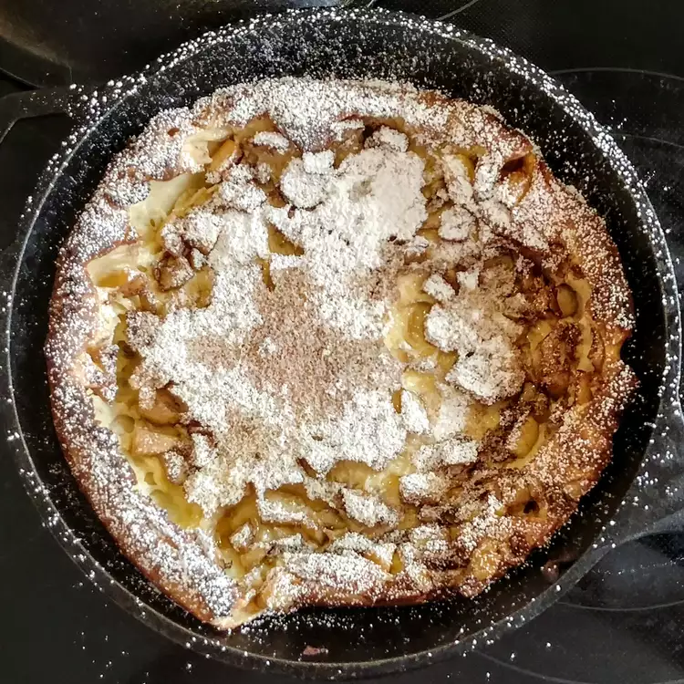

Home
Dutch Babies

Description
Dutch baby pancake, sometimes called a German pancake, a Bismarck, a Dutch puff, Hooligan, or a Hootenanny, is a dish that is similar to a large Yorkshire pudding.
Unlike most pancakes, Dutch babies are baked in the oven, rather than being fried. They are generally thicker than most pancakes and contain no chemical leavening ingredients such as baking powder.
Ingredients
- 3 large eggs, room temperature
- 2/3 cup milk, room temperature
- 1/2 cup packed all-purpose flour
- 1/4 teaspoon vanilla extract
- 1/4 teaspoon salt
- 3 tablespoons clarified butter
- 1 tablespoon butter
Steps
- Preheat the oven to 425 degrees F
- Blend eggs, milk, flour, vanilla, and salt together in a blender until batter is smooth
- Melt clarified butter in a 10-inch cast iron skillet over high heat until bubbling; pour batter into the center of the skillet
- Bake in the preheated oven until puffed and golden, 20 to 25 minutes. Brush with 1 tablespoon butter.